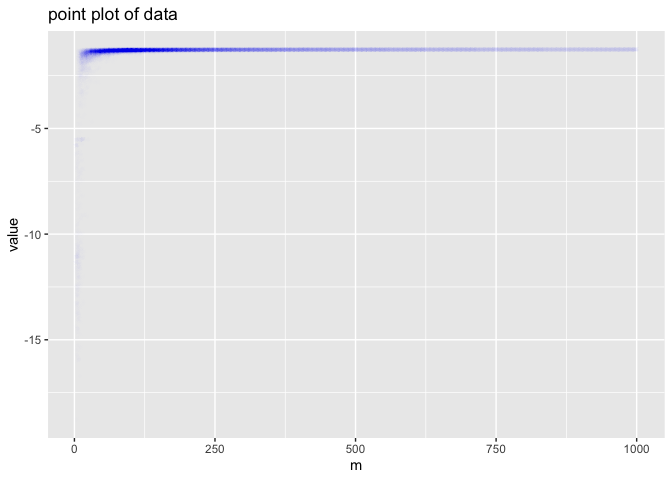
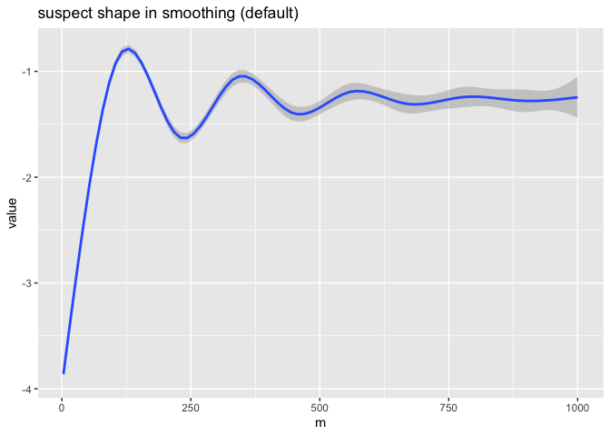
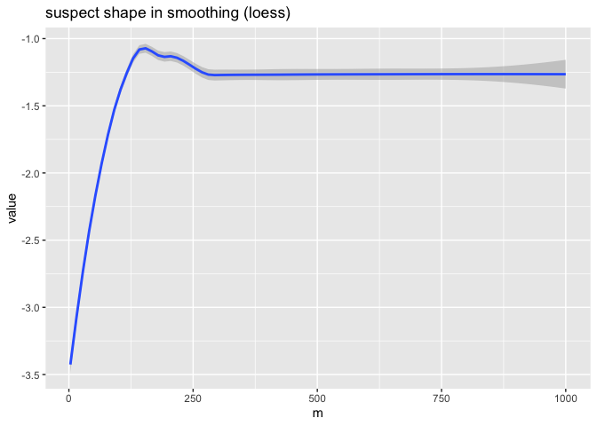
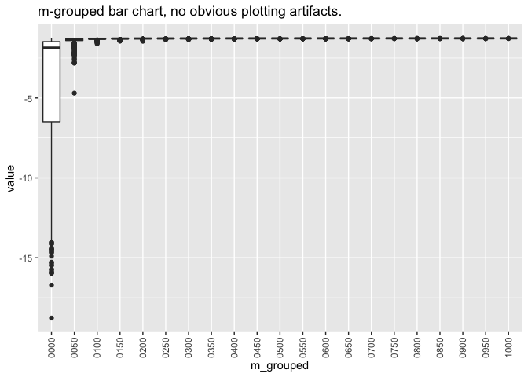
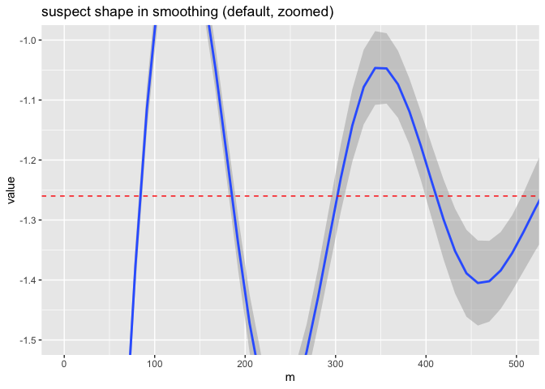
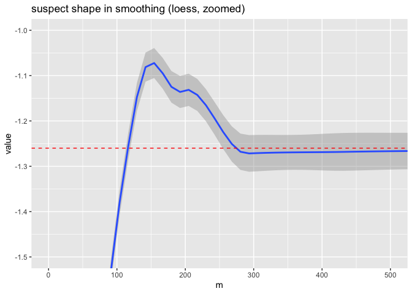
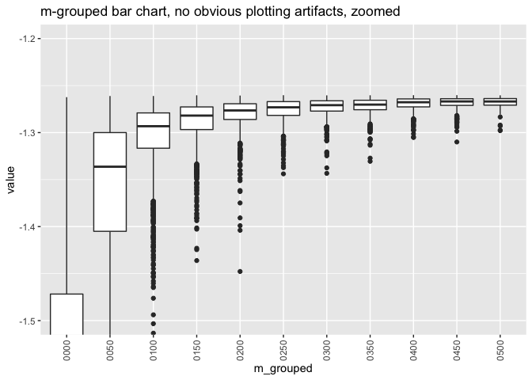
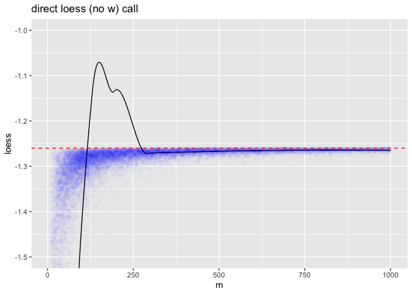
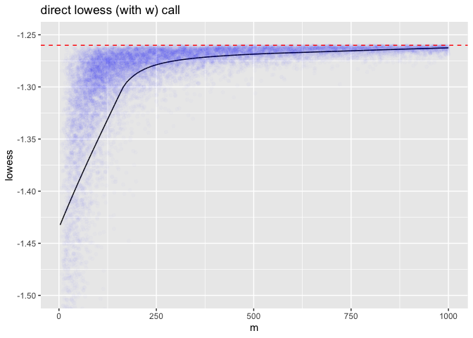
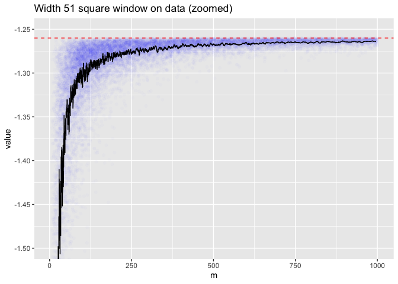

Here is a quick data-scientist / data-analyst question: what is the overall trend or shape in the following noisy data? For our specific example: How do we relate value as a noisy function (or relation) of m? This example arose in producing our tutorial "The Nature of Overfitting".
One would think this would be safe and easy to asses in R using ggplot2::geom_smooth(), but now we are not so sure.
Let's first load our data and characterize it a bit
## m value
## 1 3 -12.968296
## 2 3 -5.522812
## 3 3 -6.893872
## 4 3 -5.522812
## 5 3 -11.338718
## 6 3 -10.208145## m value
## Min. : 3.0 Min. :-18.773
## 1st Qu.: 86.0 1st Qu.: -1.304
## Median : 195.0 Median : -1.276
## Mean : 288.8 Mean : -1.508
## 3rd Qu.: 436.0 3rd Qu.: -1.266
## Max. :1000.0 Max. : -1.260## [1] 15545Now let's try and look at this data. First we try a scatter plot with a low alpha, which gives us something similar to a density presentation.
library(ggplot2)
ggplot(
data = d,
mapping = aes(x = m, y = value)) +
geom_point(
alpha = 0.005,
color = 'Blue') +
ggtitle("point plot of data")
Each m value has many different value measurements (representing repetitions of a noisy experiment). Frankly the above is not that legible, so we need tools to try and summarize it in the region we are interested in (value near -1.25).
Let's run a default smoothing line through this data to try to get the overall relation.
ggplot(
data = d,
mapping = aes(x = m, y = value)) +
geom_smooth() +
ggtitle("suspect shape in smoothing (default)")## `geom_smooth()` using method = 'gam' and formula 'y ~ s(x, bs = "cs")'
This graph appears to imply some sort of oscillation or structure in the relation between mean value and m. We are pretty sure there is no such structure, and this is an artifact of the smoothing method. This defect is why we did not use ggplot2::geom_smooth() in our note on training set size.
We did see a warning, but we believe this is just telling us which default values were used, and not indicating the above pathology was detected.
At this point we are in a pickle. We had theoretical reasons to believe the data is a monotone increasing in m trend, with mean-zero noise that decreases with larger m. The graph doesn't look like that. So our understanding or theory could be wrong, or the graph didn't faithfully represent the data. The graph had been intended as a very small step in larger work. Re-examining the intricacies of what is the default behavior of this graphing software was not our intended task. We had been doing some actual research on the data.
Now have a second problem: is this unexpected structure in our data, or a graphing artifact? The point is: when something appears to work one can, with some risk, move on quickly; when something appears to not work in a surprising way, you end up with a lot of additional required investigation. This investigation is the content of this note, like it or not. Also in some loud R circles, one has no choice but to try "the default ggplot2::geom_smooth() graph", otherwise one is pilloried for "not knowing it."
We can try switching the smoothing method to see what another smoothing method says. Let's try loess.
ggplot(
data = d,
mapping = aes(x = m, y = value)) +
geom_smooth(method = 'loess') +
ggtitle("suspect shape in smoothing (loess)")## `geom_smooth()` using formula 'y ~ x'
Now we have a different shape. At most one of these (and in fact neither) is representative of the data. There is, again, a warning. It appears, again, to be a coding style guide- and not detection of the issue at hand.
Let's try a simple grouped box plot. We will group m into ranges to get more aggregation.
d$m_grouped <- formatC(
round(d$m/50)*50,
width = 4,
format = "d",
flag = "0")
ggplot(
data = d,
mapping = aes(x = m_grouped, y = value)) +
geom_boxplot() +
theme(axis.text.x = element_text(angle = 90,
vjust = 0.5,
hjust=1)) +
ggtitle("m-grouped bar chart, no obvious plotting artifacts.")
For legibility, we repeat these graphs zooming in to the area under disagreement. We are using coord_cartesian() to zoom in, so as to try and not change the underlying graphing calculation.
ggplot(
data = d,
mapping = aes(x = m, y = value)) +
geom_smooth() +
zoom +
ggtitle("suspect shape in smoothing (default, zoomed)") +
geom_hline(
yintercept = max(d$value),
color = 'red',
linetype = 2)## `geom_smooth()` using method = 'gam' and formula 'y ~ s(x, bs = "cs")'
This crossing above -1.0 is very suspicious, as we have max(d$value) = -1.2600449. We have annotated this with the horizontal red dashed line.
And the entirety of the loess hump is also a plotting artifact, also completely out of the observed data range.
ggplot(
data = d,
mapping = aes(x = m, y = value)) +
geom_smooth(method = 'loess') +
zoom +
ggtitle("suspect shape in smoothing (loess, zoomed)") +
geom_hline(
yintercept = max(d$value),
color = 'red',
linetype = 2)## `geom_smooth()` using formula 'y ~ x'
The zoomed-in version of the box plot shows the noisy monotone asymptotic shape we expected for the original experiment that produced this data.
ggplot(
data = d[d$m <= 500, ],
mapping = aes(x = m_grouped, y = value)) +
geom_boxplot() +
coord_cartesian(ylim = c(-1.5, -1.2)) +
theme(
axis.text.x = element_text(
angle = 90,
vjust = 0.5,
hjust=1)) +
ggtitle("m-grouped bar chart, no obvious plotting artifacts, zoomed")
The point plot, when zoomed, qualitatively agrees with the boxplot.
ggplot(
data = d,
mapping = aes(x = m, y = value)) +
geom_point(alpha = 0.05, color = 'Blue') +
coord_cartesian(
xlim = c(0, 500),
ylim = c(-1.5, -1.25)) +
ggtitle("point plot of data, zoomed")
loess/lowessggplot2 is documented as using loess, which in turn is documented as a newer adapter for lowess "with different defaults" then loess. However, the documented exposed controls on these two methods seem fairly disjoint.
That being said loess (without a 'w', as in "Uruguay") called directly with default arguments shows the same chimeric artifact.

d$loess <- loess(value ~ m, data = d)$fitted
ggplot(
data = d,
mapping = aes(x = m)) +
geom_line(aes(y = loess)) +
geom_point(
aes(y = value),
alpha = 0.01,
color = 'Blue') +
zoom2 +
geom_hline(
yintercept = max(d$value),
color = 'red',
linetype = 2) +
ggtitle('direct loess (no w) call')
Playing with arguments can suppress the artifact, but we still saw weird (but smaller) effects even with the suggested degree = 1 alternate setting.
Directly calling lowess (with a 'w', as in "answer") gives a more reasonable result out of the box.

d$lowess <- lowess(d$m, d$value)$y
ggplot(
data = d,
mapping = aes(x = m)) +
geom_line(aes(y = lowess)) +
geom_point(
aes(y = value),
alpha = 0.01,
color = 'Blue') +
geom_hline(
yintercept = max(d$value),
color = 'red',
linetype = 2) +
coord_cartesian(
ylim = c(-1.5, -1.25)) +
ggtitle('direct lowess (with w) call')
Simple methods from fields such as signal processing work well. For example, a simple square-window moving average appears to correctly tell the story. These are the methods I use, at the risk of being told I should have used geom_smooth().
# requires development version 1.3.2
# remotes::install_github('WinVector/WVPlots')
library(WVPlots) ## Loading required package: wraprConditionalSmoothedScatterPlot(
d,
xvar = 'm',
yvar = 'value',
point_color = "Blue",
point_alpha = 0.01,
k = 51,
groupvar = NULL,
title = 'Width 51 square window on data (zoomed)') +
coord_cartesian(ylim = c(-1.5, -1.25)) +
geom_hline(
yintercept = max(d$value),
color = 'red',
linetype = 2)
The fact that the hard window yields a jagged curve gives an indication of the amount of noise in each region of the graph.
Large data sets are inherently illegible. So we rely on summaries and aggregations to examine them. When these fail we may not always be in a position to notice the distortion, and this can lead to problems.
Many of the above default summary presentations were deeply flawed and showed chimerical artifacts not in the data being summarized. Starting a research project to understand the nature of the above humps and oscillations would be fruitless, as they are not in the data, but instead artifacts of the plotting and analysis software.
As a consultant this is disturbing: I end up spending time on debugging the tools, and not on the client's task.
The above were not flaws in ggplot2 itself, but in the use of the gam and loess smoothers, which are likely introducing the artifacts by trying to enforce certain curvature conditions not in the data. We are essentially looking at something akin to Gibbs' phenomenon or ringing. This could trip up the data scientist or the data analyst without a background in signal analysis.
This sort of problem reveals the lie in the typical "data scientist >> statistician >> data analyst" or "statistics are always correct in R, and never correct in Python" snobberies. In fact a data analyst would get the summary shapes right, as presentation of this sort is one of their specialties.